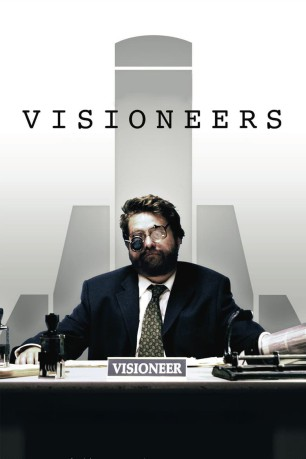

#8819 Visioneers - Wer wird denn gleich in die Luft gehen
Alternativ: Visioneers
 
 IMDB-Wertung: 6.1 / 10
IMDB-Wertung: 6.1 / 10  Metascore: 0
Metascore: 0 
Die sehr nahe Zukunft. Georg sollte eigentlich zufrieden sein: Er hat eine schöne Frau, ein Kind, ein Haus und ein Boot. Als Level 3 Angestellter beim allmächtigen Jeffers Konzern verbringt er den Tag mit sinnloser Produktivität. Aber um ihn herum passieren seltsame Dinge. Eine mysteriöse Epidemie lässt Menschen explodieren – ohne Vorwarnung fliegen sie plötzlich in die Luft. George träumt von einem Ausbruch aus seiner eintönigen Existenz, er wünscht sich ein aufregendes und selbstbestimmtes Leben. Als sein Arzt ihn warnt, dass diese neuen unkontrollierten Gefühlsausbrüche die ersten Symptome für eine mögliche Detonation sind, dreht er durch. Auf der Suche nach Freiheit, stürzt George sich und seine Familie in ein heilloses Chaos…
Jahr: 2008
Dauer: 94 Minuten
FSK: 16
Land: USA Studio: B.D. Fox IndependentTonspuren: DTS - ,
Untertitel: Deutsch,
Auflösung: 1080p (1920x1080) Größe: 7413 MB
Genre: Drama, Sci-Fi, Komödie
Regisseur: Jared Drake
Drehbuch: Brandon Drake
Soundtrack: Tim DeLaughter
Darsteller:
 Zach Galifianakis als George
Zach Galifianakis als George Judy Greer als Michelle
Judy Greer als Michelle Mía Maestro als Charisma
Mía Maestro als Charisma Missi Pyle als Sahra
Missi Pyle als Sahra James Le Gros als Julieen
James Le Gros als Julieen D.W. Moffett als Jeffers
D.W. Moffett als Jeffers Matthew Glave als Rodger
Matthew Glave als Rodger Chris Coppola als Todd
Chris Coppola als Todd Fay Masterson als Cindy
Fay Masterson als Cindy Nancy De Mayo als Maddie
Nancy De Mayo als Maddie- Lowell Deo als TV Reporter
 Aubrey Morris als Old Man Jeffers
Aubrey Morris als Old Man Jeffers- John Paulsen als Steve
- Matt Thomas als Joseph The Painter
- Andrew Tribolini als NAC Man
- Tanya Memme als Field Reporter - Bern's Death (uncredited)
- Ryan McCann als Mack Luster
- Anthony L. Fuller Jr. als Missionary #2
- Joe Rosati als Jeffers Agent #1
- Mycol Comolli als Jeffers Agent #2
- Dale Bowers als TV Couple Man
- Pat Cashman als Bern Goodman
- Juba T. Drake als Howard
- John Keister als Dr. Knob
- Toan Le als Fellow Tunt
- Damon LeGarde als Preacher Moon
- John LoPresti als US President
Datei: X:\2008(N-Z)\Visioneers - Wer wird denn gleich in die Luft gehen (2008, FSK16, 1920x1080).mkv seit 30.04.2018
Festplatte: HD 2008(G-Z)-2009(A-F)
 Es gibt insgesamt 91 Filme in der Gruppe '2008(N-Z)'
Es gibt insgesamt 91 Filme in der Gruppe '2008(N-Z)'